<!doctype html>
<html lang="en">
<head>
    <meta charset="UTF-8">
    <meta name="viewport"
          content="width=device-width, user-scalable=no, initial-scale=1.0, maximum-scale=1.0, minimum-scale=1.0">
    <meta http-equiv="X-UA-Compatible" content="ie=edge">
    <title>Document</title>
    <style>
        body {
            margin: 0;
            background-color: #f2f2f2;
        }
        #kg {
            position: absolute;
            left: 70px;
            top: 70px;
        }
    </style>
</head>
<body>
<canvas id="canvas"></canvas>
<!---->
<!--<script>
    var canvas = document.getElementById('canvas')
    var ctx = canvas.getContext('2d')
    var img1 = new Image();
    var img2 = new Image();
    var img3 = new Image();
    img1.src='images/color.png';
    img2.src='images/touch_btn.png';
    img3.src='images/on_btn.png';

    canvas.addEventListener('touchmove', function(e){
        e.preventDefault()
    })

    function huaquan(x, y, r){
        ctx.drawImage(img2, x-r, y-r, 2*r, 2*r )
    }
    var a = 300, d_kg=0.4*a;
    canvas.width = a;
    canvas.height = a;
    img1.onload = function(){
        ctx.drawImage(img1, 0, 0, 300, 300)

    }
    img2.onload = function(){
        ctx.drawImage(img3, 0.5*a - 0.5*d_kg, 0.5*a-0.5*d_kg, d_kg, d_kg)
    }


</script>-->

<script>
    var a = '300'
    var d=a/3,r=0.05*a,circleX=0.5*a-0.707*d,circleY=0.5*a-0.707*d,progress=0,d_kg=0.4*a;

    document.getElementById("canvas").width =a;
    document.getElementById("canvas").height = a;
    var ctx=document.getElementById("canvas").getContext("2d")

    var img1 = new Image();
    var img2 = new Image();
    var img3 = new Image();
    img1.src='images/color.png';
    img2.src='images/touch_btn.png';
    img3.src='images/on_btn.png';

    canvas.addEventListener("touchmove",function(e){
        e.preventDefault();
        var touch=e.touches[0];
        // var GactionId = this.getAttrbute('data-sxid');
        // console.log(GactionId);
        var canvasT = canvas.getBoundingClientRect().top;
        var canvasL = canvas.getBoundingClientRect().left;
        var tX=parseFloat(touch.pageX)-canvasL, // 左侧距离
                tY=parseFloat(touch.pageY)-canvasT; // 顶部距离

        if((Math.pow((tX-0.5*a),2) +Math.pow((tY-0.5*a),2))>0.04*a*a){ // 在关闭按钮之外
            if((tY<0.5*a&&(tX<0.5*a))||(tY>0.5*a&&(tX<0.5*a))){ // 触点在第四象限 或 第三象限
                console.log('触点在第四象限 或 第三象限');
                circleX=0.5*a-d*Math.cos(Math.atan((tY-0.5*a)/(tX-0.5*a)));// 定死在一个圆圈上
                circleY=0.5*a-d*Math.sin(Math.atan((tY-0.5*a)/(tX-0.5*a)));
            }else{ // 触点在第一和第二象限
                console.log('触点在第一和第二象限');
                circleX=0.5*a+d*Math.cos(Math.atan((tY-0.5*a)/(tX-0.5*a)));
                circleY=0.5*a+d*Math.sin(Math.atan((tY-0.5*a)/(tX-0.5*a)));
            }

            if((tY>0.5*a&&(tX>0.5*a))||(tY<0.5*a&&(tX>0.5*a))){ //第一和第二象限
                console.log(1);
            }else{
                console.log(2);
            }
        }
    },false)

    function huaquan(x,y,r){
        ctx.drawImage(img2,x-r,y-r,2*r,2*r);
    }

    !function(){
        ctx.clearRect(0, 0, 0.7*a, a);

        ctx.drawImage(img1,0,0,a,a);
        ctx.drawImage(img3,0.5*a-0.5*d_kg,0.5*a-0.5*d_kg,d_kg,d_kg);
        huaquan(circleX,circleY,r);
        setTimeout(arguments.callee,13);//刷新间隔，控制帧数  这样才能将多张图片用canvas画出来
    }();

</script>
</body>
</html>